VK-GNN：扩展好友推荐图神经网络——多哈希用户嵌入与时间邻居采样
- 英文标题：Scaling Graph Neural Networks for Friend Recommendation: Multi-Hash User Embeddings and Temporal Neighbor Sampling
- 作者：Maksim Utushkin、Andrei Ovsiannikov、Alexander D’yakonov
- 一作机构：AI VK
- 公开时间：2026-08-27
- 论文入口：arXiv:2608.27413
- 代码状态：VK-GNN 官方实现已核验可访问
- 来源备注：作者在论文中注明已被 CIKM 2026 接收；本文将其作为作者披露信息，不等同于对正式会议论文集的独立核验
1. 背景和问题
要把消息传递 GNN 部署到拥有数亿用户和数百亿边的生产社交图，必须同时解决建模与系统瓶颈：完整用户 ID 表超过 200 GB，而朴素时间采样会被高连接用户拖垮。
论文讨论的不是内容 Feed 排序，而是社交平台中的好友推荐排序，也就是常见的 “People You May Know”。整条产品链路先由行为计数、Adamic–Adar 或学习式检索产生候选，再对用户—候选对做排序。这里的正样本不是任意未来时刻出现的新边，而是一次真实推荐曝光后发生的加好友；负样本则来自无动作曝光和主动隐藏。这个条件非常重要：学术链路预测往往在所有节点对上判断未来是否连边，而生产排序只能评价被上游召回且真正曝光过的候选。因而本文的模型既不能脱离召回分布谈泛化，也不能把好友推荐结果直接外推到内容消费排序。
好友接受概率最强的信号通常藏在局部社交结构中：共同好友、邻域稠密度、双方邻域的重叠以及多跳关系。GNN 的消息传递天然适合聚合这些信号，但 VK 的图快照达到 1.94 亿活跃用户、280 亿条边。两层网络即使只从一个种子出发，也可能经由高度数枢纽扩张到数千万节点，因此训练不可能使用完整邻域。另一方面，性别、年龄、节点度数三项用户属性相当稀薄；若给每个用户分配 256 维 float32 向量，单张 ID 表约需 205 GB。模型必须既保留“用户是谁”的可学习结构信号，又不能让参数表本身压垮单机训练与服务。
时间正确性是第二个容易被离线指标掩盖的问题。每条友谊边都有形成时间，每个训练样本也有曝光时间。如果在样本发生时让 GNN 看到数据集末尾才出现的友谊边，模型就用到了未来信息；这种泄漏不是简单的随机划分错误，而是发生在每一跳邻域扩展内部。最直接的修复方法是扫描某个用户的全部邻居，过滤时间早于曝光的边再采样。普通用户尚可承受，但度数达到一万量级的枢纽会反复出现在许多子图里，使每次采样成本与度数线性增长。论文把这个看似底层的数据布局问题提升为模型有效性的前置条件：时间过滤太慢，团队很可能退回非时间图；非时间图虽然运行快，却会给出失真的训练信号。
这篇工作的价值在于没有再发明复杂的消息传递层，而是选择两个“负载承重”的部件：用三路独立哈希从小型共享表构造用户 ID 表示，用按时间排序的 CSR 邻接表配合二分搜索定位历史前缀。前者把 ID 表缩到 2 GB，后者把一次时间采样从 $O(d_u+K)$ 降到 $O(\log d_u+K)$。作者再把 CPU 随机访存、GPU 训练、周期性全量向量刷新和在线排序串成闭环。它值得推荐系统工程人员精读，正因为主张同时接受四类证据约束：输入表示消融、时间采样消融、端到端资源数据和两周生产 A/B，而不是只凭一张离线排行榜宣布可扩展。
论文还提供了一个很实用的系统判断框架：哪部分必须精确，哪部分可以近似，哪部分应该离线。曝光时刻之前的可见历史属于训练语义，不能为了吞吐省掉；邻居全集则可以通过每跳固定 fanout 近似，因为完整两跳展开根本不可计算；用户表示适合周期性离线刷新，因为好友关系变化慢于请求级兴趣。multi-hash 的碰撞也是受控近似：系统放弃每个 ID 拥有独立参数行，换来 GPU 可容纳的共享表，但通过三路哈希、属性支路和邻域传播降低完全混淆风险。这样的分解比“换一个更强 GNN 层”更能迁移到工业推荐，因为它把统计假设与硬件约束逐项对应。与此同时，作者没有公开候选生成细节、刷新周期和完整数据分布，所以本文更像一份经过线上验证的设计报告，而不是能在公共基准上逐数复现的算法论文；阅读时应把可核验的表格结果与作者提出的机制解释分开。
2. 方法
2.1 GATv2 编码器与双角色打分头
训练样本写成 $(u,v,y,\tau)$：$u$ 是收到推荐的用户，$v$ 是候选好友，$y$ 表示曝光后是否发生加好友，$\tau$ 是曝光时间。模型必须只使用 $\tau$ 之前可见的图信息。作者沿用下游生产排序器的曝光条件标签，把 GNN 训练成二元分类器；这不是端到端替换线上排序器，而是让 GNN 分数成为梯度提升排序器的一项新增特征。其目标函数（公式 1）为：
符号解释：$\mathcal{D}$ 是曝光样本集，$u$ 和 $v$ 分别为 query 用户与候选用户，$y\in\{0,1\}$ 是曝光条件标签，$\tau$ 是样本时刻，$f(u,v;\tau)$ 是只读到该时刻历史后的预测概率。该式把线上消费分布写进监督目标，但也意味着结果只对现有召回产生的候选集合成立；召回完全漏掉的潜在好友不会进入这套损失。
节点编码器采用两层 GATv2，每层对采样邻居计算注意力。它没有为好友任务另外设计关系算子，而是把系统创新集中在可扩展输入与正确采样上。未归一化分数（公式 2）、邻域 softmax（公式 3）与聚合更新（公式 4）依次为；三式应连起来理解，分别控制相关度、同一中心节点内的竞争和消息汇总：
符号解释：$h_v^{(l)}$ 与 $h_u^{(l)}$ 是第 $l$ 层中心节点和邻居表示，$W_s^{(l)}$、$W_t^{(l)}$ 分别变换源与目标角色，$a^{(l)}$ 将联合表示映射为标量相关度。GATv2 的动态注意力允许邻居排序随中心节点改变，适合共同好友信号并非全局固定权重的场景。
符号解释：$\mathcal{N}(v)$ 是本次采样到的邻居集合，$\alpha_{vu}^{(l)}$ 是邻居 $u$ 对中心节点 $v$ 的归一化权重。这里的 softmax 只在采样子图上进行，因此它同时受 fanout 和时间截止影响；它不是完整邻域上的精确注意力。
符号解释：$\sigma$ 是非线性激活，求和把邻居变换后的消息聚合成下一层表示。两层、每跳 30 个邻居把单个种子的计算图控制在有限规模，同时仍能覆盖共同好友之外的二跳结构。
最终表示不直接用一个头同时扮演两种角色，而是映射成 query 向量和 candidate 向量后做内积（公式 5）。这保留了曝光场景的方向性，也让离线刷新后可以分别存储两类 128 维表示；请求时无需再次执行 GNN，只需读取向量并计算配对特征：
符号解释：$f_q$ 与 $f_c$ 是两个独立投影头，输出维度均为 128，$s(u,v)$ 是供分类和下游排序使用的配对分数。虽然友谊边最终是无向的，但“谁正在接收推荐”与“谁作为候选被展示”在曝光分布中并不对称；双头把这种产品角色差异显式留给模型学习。
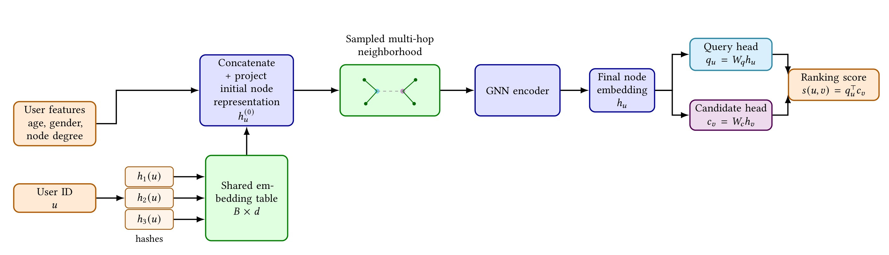
Figure 1 从左到右给出了可服务化的信息流。性别、年龄桶和度数桶构成低容量属性支路，用户 ID 经三个哈希位置读取共享表并拼接；两者投影到同一 512 维空间后相加，成为节点初始表示。随后，有限 fanout 的多跳邻域进入 GATv2，而不是让 ID 向量绕开图结构直接打分。最终节点向量再分成 query/candidate 两个头，内积结果才进入好友候选排序。图中最关键的工程含义是：2 GB 哈希表并不是独立的矩阵分解模型，它是消息传递的底层“身份信号”；若去掉邻域，仍可做 multi-hash only 消融，但完整模型的收益来自身份、属性和结构共同作用。图中也明确了本文输出只是 ranking score，因此线上 +16% 不能解释成 GNN 单独替换了候选生成和最终排序的全链路效果。
2.2 时间一致的多跳邻居采样
对曝光时刻 $\tau$，每一跳只能访问在安全窗口之前形成的友谊边。限制不能只施加在第一跳，否则第二跳仍可能把未来结构带回中心节点；也不能改用中间边的时间，因为任务要恢复的是曝光瞬间的整张可见子图。作者定义时间邻域（公式 3）为：
符号解释：$t_{uv}$ 是友谊边建立时间，$\Delta\ge 0$ 是对生产数据延迟的安全偏移，基础配置为 30 分钟。重要细节是同一条训练样本的 $\tau$ 被传播到全部 $L$ 跳；扩展中间邻居时不会把截止时间改成上一条边的时间。这样得到的是“预测时刻的历史快照”，而不是沿时间递减的事件链采样。
普通实现会遍历用户全部 $d_u$ 个邻居、过滤时间、再抽 $K$ 个。本文在构建 CSR 时把每个用户的邻居 ID 数组与时间数组按时间升序同步排列。采样器用 lower_bound 找到第一个不满足 $t_{uv}<\tau-\Delta$ 的位置 $p$，然后只从前缀 $(v_1,\ldots,v_{p-1})$ 均匀采样。一次调用的复杂度对照（公式 7）是：
符号解释：$d_u$ 是完整邻接长度，$K$ 是每跳 fanout。二分版本并没有减少最终抽取的 $K$ 个样本，而是消除了为定位有效候选而扫描整条邻接表的成本。代价被前移到构图阶段：所有邻接排序总成本约为 $O(|E|\log d_{\max})$；但图快照可被多个 epoch 和刷新周期复用，所以对高频采样的枢纽节点尤其划算。
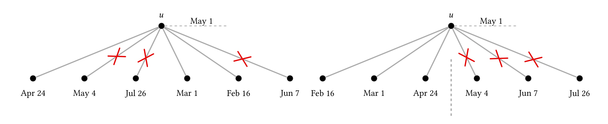
Figure 2 用同一用户的七条带日期邻边解释“数据结构为何改变算法成本”。左侧日期无序，截止时刻之前与之后的边交错，红叉无法通过一个数组边界表达，采样器只能检查每条边。右侧先按时间排序，虚线把历史前缀和未来后缀分开；一次二分即可定位分割点，随后在左侧前缀内抽样。需要注意，图示并不表示未来边从 CSR 中物理删除：它们仍保存在快照里，只是在该训练样本的视图中不可见。这让同一份 225 GB 图可以服务不同时间的曝光样本，也让朴素扫描与二分实现严格使用同一候选集合，因而 Table 6 中二者 ROC-AUC 相同是应有结果，性能差异才是采样实现的贡献。若边时间排序或 indices 与 timestamps 对齐出错，二分会快速返回错误历史，因此构图校验与采样单元测试和算法复杂度同样重要。
2.3 多哈希用户 ID 表示与弱内容特征融合
属性支路只使用三个字段。性别直接离散化，年龄和图度数先做分位数分桶；每个字段独立 one-hot 后经专属线性层和 LayerNorm 映射到隐藏维度，最后求和（公式 4）。这种设计容量有限，却为训练快照之外的用户保留基础回退，并让消融能量化弱内容特征的真实上限：
符号解释：$m=3$，$x_{u,j}$ 是第 $j$ 个字段的离散 one-hot，$W_j,b_j$ 是字段专属投影参数，$z_u^{\mathrm{feat}}$ 是 512 维属性向量。分位数分桶让长尾度数不会直接以巨大连续值主导网络，但也牺牲了桶内细粒度差异。
身份支路不创建 $|V|\times d$ 表，而是维护 $T\in\mathbb{R}^{B\times d}$，用 $k$ 个独立哈希函数取行、拼接（公式 5）。共享行会从许多用户收到梯度，因而参数规模由 $B$ 决定而不再随用户数线性增长；三路地址组合则保留比单哈希更强的可区分性：
符号解释：$B=2^{21}$ 是共享表行数，$d=256$ 是单行维度，$k=3$ 是槽数，$h_i$ 为 64 位整数乘法哈希，$\Vert$ 表示拼接。于是所有用户共同训练约 2 GB 的表，而不是为 1.94 亿用户保留约 203 GB 的独立行。单个槽发生碰撞并不等于两个用户完全相同，因为另外两个槽通常仍不同。
拼接结果再投影回 GNN 隐藏维度，并与属性向量相加（公式 6）。投影层既压缩三槽拼接，也允许网络学习不同槽位的交互；LayerNorm 避免 ID 支路因参数量大而在数值尺度上淹没属性支路：
符号解释：$W_h,b_h$ 将 $3\times256$ 维拼接向量压到 512 维，LayerNorm 稳定其尺度，$h_u^{(0)}$ 是进入第一层 GATv2 的节点表示。相加要求两条支路在同一隐藏空间中表达互补信号，也使无 ID 学习信号的新用户仍能退化到属性支路，而不是产生维度不兼容。
在均匀独立哈希近似下，两名固定用户在全部 $k$ 个槽同时碰撞的概率（公式 11）为。这个估计只描述地址组合，不涵盖热门用户的梯度强度和哈希函数相关性；它适合说明完全冲突为何罕见，却不能替代容量扫描：
符号解释：$B$ 越大或 $k$ 越多，完全不可区分的概率越低；基础配置下三路完整碰撞极小。这个估计只讨论哈希地址，不保证训练后的表示完全独立，也没有消除热门槽被许多用户共享造成的梯度干扰。论文提出一种合理解释：有限共享可能像正则化，避免每个用户行过拟合；但这只是作者假设，实验能证明 multi-hash 与完整表质量相当，不能单凭 Table 4 证明正则化就是原因。
2.4 CPU 采样—GPU 训练与周期性向量刷新
系统把 batch 构造和神经网络优化拆为两种工作负载。Java/C++ 原生采样器在 64 核 CPU 和内存中的 CSR 上做随机访问、时间过滤、多跳扩展、节点重编号，并把每层二部子图、原始用户 ID、标签和权重序列化到有界队列。Python 侧的 PyTorch、DGL/GraphBolt worker 一卡一进程，以 DDP 消费已准备批次。这个解耦让 CPU worker 数量、预取深度和 GPU 并行度可以分别调节：采样积压时扩 CPU，GPU 短暂停顿时由预取缓冲吸收，而不必把随机 CSR 访问塞进 GPU step。
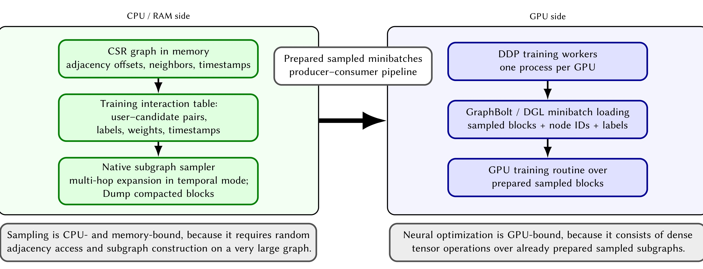
Figure 3 左侧绿色区域保存 CSR 图和曝光表，原生采样器输出紧凑 message-passing blocks；中间队列是背压边界，右侧蓝色区域才执行 GraphBolt/DGL 加载和前反向。图底部两块说明也属于原始图对象：CPU 阶段受随机邻接访问和内存带宽约束，GPU 阶段面对的已是规整张量。这个结构解释了为什么论文同时报告 sampling time 与 GPU step，而不能把 595 ms 采样直接等同于 927 ms 训练步。若预取足够，两者可以部分重叠；若 CPU 供给慢于 GPU 消费，队列耗尽后才会成为整机吞吐瓶颈。复现时应分别监控队列深度、采样尾延迟、GPU 空闲比例和 NUMA 内存访问，否则只比较单个 CUDA step 会高估系统效率。
CSR 的 indices 与对齐的 timestamps 都用 32 位整数，各约 112 GB；indptr 因总边数超过 $2^{32}$ 使用 64 位，约 1.5 GB，总计约 225 GB，全部驻留 512 GB 系统内存。用户重新编号使 32 位邻居 ID 成立，按时间排序则让同一布局兼顾训练和推断。GPU 侧保存 2 GB multi-hash 表、模型参数、Adam 状态和激活，单设备可容纳并在八个 DDP rank 上复制；这比对 203 GB 完整 ID 表做 TorchRec 行分片更适合周期性服务。
线上请求不会实时展开两跳邻域。训练完成后，系统为大规模活跃用户批量采样局部子图、计算 GNN 向量并写入 embedding storage；在线 ranker 只读取 query/candidate 向量及其得分特征。这个选择把请求延迟问题转化为刷新时效问题：新边不会立即传播到相关用户的表示，新用户在下一次重训前也没有图学习信号。作者认为友谊关系相较 Feed 兴趣变化慢，因而周期刷新是可接受取舍，但论文没有公开具体重训/刷新周期，无法由 6.57 小时全量计算时间推断线上陈旧窗口。
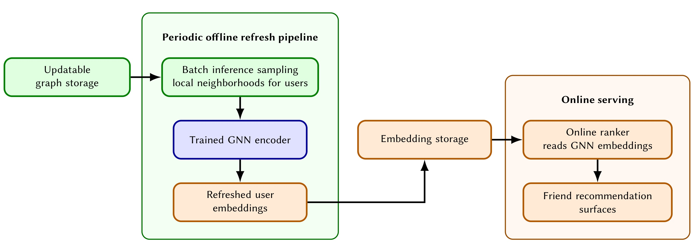
Figure 4 把系统明确分成绿色的离线刷新环和橙色的在线读取链路。可更新图存储先向 batch inference 提供局部邻域，训练好的 GNN 编码器生成用户向量，再写入 embedding storage；在线 ranker 不反向访问图，只从向量库读取特征并服务多个好友推荐入口。箭头显示向量库是两个时域的接口：离线阶段可以花小时级成本处理 1.94 亿用户，线上阶段则保持 p50/p90/p99 延迟与对照组无可测回归。图中也暴露一个故障面：刷新任务延迟或图快照失败时，在线链路仍可工作但表示会继续老化。因此生产实现需要版本化向量、原子切换、覆盖率监控和旧版本回退，论文的框架图说明了这些机制应落在哪个边界，却没有给出具体 SLA。
3. 实验结果
3.1 数据、时间切分与固定配置
实验使用生产友谊图快照与匹配的推荐曝光日志，训练集取最后三年的曝光，测试交互按曝光时间留出。评价指标是 per-user ROC-AUC：先在每个用户的候选曝光内比较正负排序，再按用户汇总，避免曝光量巨大的活跃用户完全主导全局 AUC。论文没有公开数据、正负比例、用户分层、测试窗口长度和置信区间，因此外部团队无法复算绝对数值；但时间切分加上每条样本内部的时间邻居过滤，至少同时处理了“测试晚于训练”和“消息传递不看未来边”两个层次。
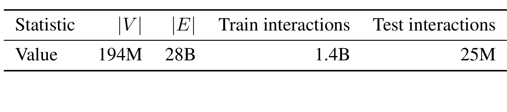
Table 1 给出 1.94 亿节点、280 亿边、14 亿训练曝光和 2500 万测试曝光。边数与节点数的组合意味着平均度数很高，但平均值会掩盖度数长尾；作者反复强调一万量级 hub，说明系统瓶颈来自被许多采样任务重复访问的少数节点。训练曝光约为测试曝光的 56 倍，也符合三年历史加较短留出窗口的量级。需要谨慎的是，边数究竟按无向边一次还是 CSR 双向条目计数，正文没有单独澄清；其内存计算直接使用 280 亿个 indices 与 timestamps 元素，所以对系统容量评估应以 225 GB 实际 CSR 口径为准，而不要把图论意义上的无向边数再机械乘二。
基础模型是两层、八头 GATv2，隐藏维度 512，query/candidate 头各 128 维；三路 hash 读取 $2^{21}$ 行、每行 256 维的共享表。每跳采 30 个邻居，时间安全偏移 30 分钟；每卡 batch 为 1024 个用户—候选对，八张 A100 80 GB 做 DDP，Adam 学习率 $1.5\times10^{-3}$，按验证 ROC-AUC 早停。论文声明每个消融只改变一个参数，其余固定，这使 Table 4—6 可以分别归因于输入表示、表容量与采样方式，而不会和主干深度或 batch 改动混杂。
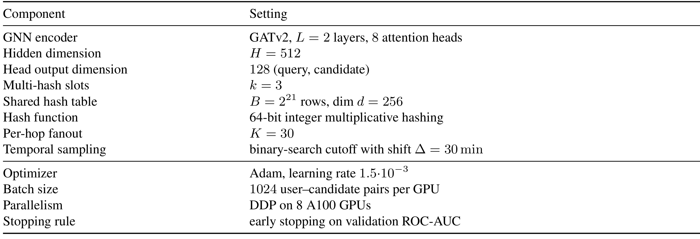
Table 2 的复现意义大于普通超参数表。$L=2$ 与 $K=30$ 理论上让一个种子最多扩到约 $1+30+900$ 个位置，实际会因重复节点而更少；八头注意力与 512 维隐藏层提供较强编码容量。$B=2^{21}$、$d=256$ 对应约 5.37 亿 float 参数，即约 2 GB，和作者报告一致。30 分钟安全窗不是模型固有常数，而是生产数据延迟假设；换平台时应按边事件与曝光日志的到达延迟重新标定。早停没有给 patience 等细节，哈希随机种子、采样随机性和多次运行方差也未披露，所以配置足以理解资源量级，但尚不足以保证严格数值复现。尤其应保存哈希函数版本与用户重编号映射，否则重训后的地址漂移会使旧向量和新模型无法安全混用。
3.2 离线主结果与基线层级
作者设置了三个层次清楚的基线。Top-pop 按候选在友谊图中的入度排序，作为无参数下界；MF 使用相同曝光日志学习协同信号，但不做图消息传递；WalkGNN 是公司此前的生产方案，在局部 ego-net 上聚合 GNN 相关性，并且在线逐对构建上下文。本文方案则预先计算全局多跳用户向量，让线上配对退化为内积。这个对照不只是精度排行，也包含服务路径差异：WalkGNN 更贴近请求时局部计算，VK-GNN 把成本搬到周期刷新。
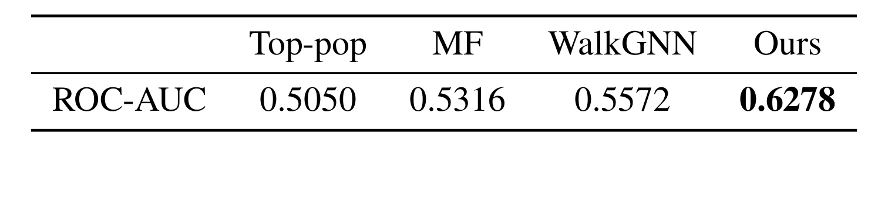
Table 3 显示 per-user ROC-AUC 从 Top-pop 的 0.5050、MF 的 0.5316、WalkGNN 的 0.5572，提升到本文方法的 0.6278。相对最强生产基线绝对增加 0.0706，幅度明显，不是第四位小数的微调；从能力层级看，单纯流行度接近随机，曝光协同学习带来第一段收益，ego-net 结构再提升，而更完整的多跳消息传递与可扩展身份表示贡献最大。可是这张表只报告单点，没有标准差、显著性或用户分桶。我们可以确认完整系统在该生产测试集上更好，却不能判断收益是否均匀覆盖低度数新用户与高度数老用户，也不能区分多少来自 GATv2、多少来自训练数据处理或特征工程；后面的单组件消融只能回答其中两项。
3.3 多哈希与时间采样消融
输入表示消融先拆开三个信号来源：只有性别/年龄/度数特征；只有 multi-hash ID；特征加完整 1.94 亿行 ID 表；特征加 multi-hash ID。完整表通过 TorchRec 在八卡间做行分片，仅作为离线高容量参照，不是作者认可的服务方案。这一点避免了一个常见误读：Table 4 比较的是质量上限，不代表 203 GB 表也能用相同在线刷新与部署方式落地。
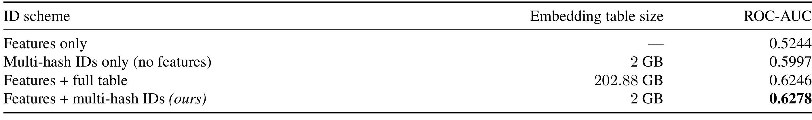
Table 4 中 features only 为 0.5244，multi-hash only 达 0.5997，证实社交结构身份信号远强于三个属性字段。特征加完整表为 0.6246，而特征加 2 GB multi-hash 表达到 0.6278；后者不仅没有显著损失，点估计还高 0.0032。内存从 202.88 GB 到 2 GB，压缩约 99%，与摘要“超过 98%”一致。最稳妥的结论是多哈希在当前任务和配置下匹配了完整表质量，而不是它普遍优于完整 ID 表。作者提出碰撞共享具有隐式正则化作用，但没有用不同随机种子、正则强度或用户频次分层验证该机制；点估计反超也可能落在训练方差内。
共享表容量从 $2^{17}$ 扫到 $2^{22}$，三哈希与每行 256 维保持不变。容量每翻倍，GPU 表内存从 128 MB 依次增到 4 GB。这个实验直接测量部分碰撞和参数容量之间的取舍，避免只用极小表与完整表做两个端点对照。
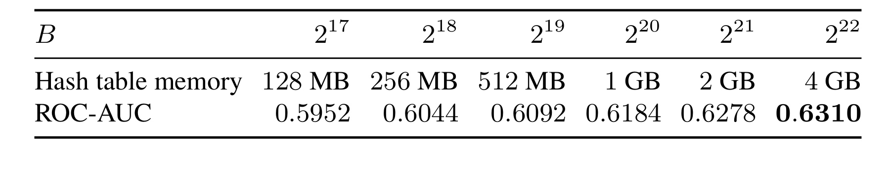
Table 5 的 ROC-AUC 随容量单调从 0.5952 上升到 0.6310：128 MB 到 256 MB 增 0.0092，256 MB 到 512 MB 增 0.0048，512 MB 到 1 GB 增 0.0092，1 GB 到 2 GB 增 0.0094，而 2 GB 到 4 GB 只增 0.0032。作者因此选择 2 GB 作为生产点，理由不是曲线已经完全平台化，而是再翻倍内存的边际收益明显缩小。该结果也提示业务规模扩大后需要重新扫描 $B$：用户数、活跃度分布或 GPU 预算改变会改变碰撞频率和收益曲线，不能把 $2^{21}$ 当作与平台无关的最佳值。
时间采样消融把三个系统状态并列：不做时间限制；扫描整条邻接表的朴素时间采样；按时间排序并二分的时间采样。后两者从完全相同的 $\mathcal{N}_{<\tau}(u)$ 抽样，所以它们应具有相同质量；第一种能看到曝光之后的边，运行更简单但存在泄漏。
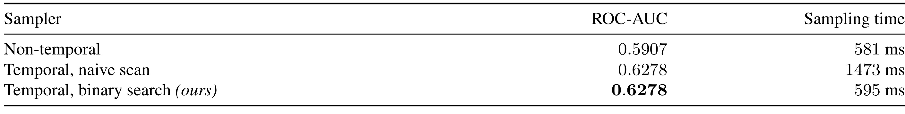
Table 6 给出的非时间版本 ROC-AUC 为 0.5907，每批采样 581 ms；两种时间正确版本都为 0.6278。0.0371 的绝对差说明未来边并没有“虚高”指标，反而让模型在本文测试口径下更差，作者将其解释为泄漏使训练关系与真实预测条件错位。这个现象提醒我们：泄漏不一定总表现为分数上升，它仍然使评估失真。朴素扫描耗时 1473 ms，是非时间版本的约 2.54 倍；二分版本降到 595 ms，只比非时间多 14 ms，并保持同样质量。因而系统贡献不是用近似采样换速度，而是以几乎相同的每批成本恢复时间正确性。表中没有 p95/p99 采样延迟和度数分桶，尚不能判断 hub 尾延迟改善有多大；也未说明 595 ms 是否含序列化和队列等待，跨系统比较时应保持计时边界一致。
3.4 端到端效率与线上 A/B
基础配置运行在单台 8×A100 80 GB、512 GB RAM、64 核 CPU 主机上。单个 GPU 前反向 step 为 927 ms，一个 epoch 43.4 小时，约 25.2 万次迭代早停，总收敛时间 63 小时。作者没有单列采样与训练的重叠比例，因此不能由 595 ms+927 ms 直接重建 epoch 时间；但这些数值至少给出了“单机可训练”的实际含义，而不是只声明参数能装入显存。
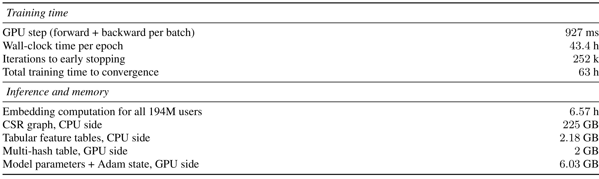
Table 7 把离线成本和内存边界放在同一张表里。为 1.94 亿用户计算向量需 6.57 小时；CSR 图占 CPU 225 GB，属性表 2.18 GB；GPU 侧 multi-hash 表 2 GB，模型参数加 Adam 状态 6.03 GB。这里最有价值的对比是 225 GB 图与 2 GB 可训练 ID 表：系统没有消除大图存储，而是把图放在容量更大的主存，把需频繁优化和复制的参数压到 GPU。6.57 小时全量刷新意味着方案适合小时级或更慢变化的社交关系，不适合需要秒级响应的会话兴趣。论文也没有报告图构建排序耗时、向量库写入时间、失败重试和增量刷新，因此该表是核心算力基线，不是完整运维成本清单。
线上实验运行两周。处理组在既有生产 ranker 中加入 GNN score，对照组保留此前生产排序器；因此测到的是新增图特征的边际价值。两个直接指标——来自推荐的好友新增数与至少添加一个推荐好友的独立用户数——都在 $p<0.01$ 下显著；Feed 总时长被作者视为连接增长带来的下游指标，而不是模型直接优化目标。
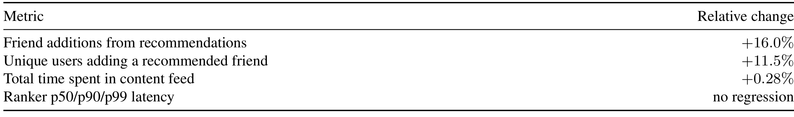
Table 8 报告好友新增 +16.0%、独立加好友用户 +11.5%、Feed 总时长 +0.28%，并称 ranker 的 p50/p90/p99 延迟无回归。前两个指标同向且幅度不同，说明提升不只是少数高活跃用户重复加很多好友，覆盖人数也扩大；但缺少绝对基数，仍无法判断人均变化和长期留存。Feed 时长提升很小却显著，只能作为社交连接可能传导到内容消费的相关证据，不能证明因果路径。延迟不回归与 Figure 4 的离线向量策略一致，但线上实验没有公开流量比例、地区/设备分层、护栏指标、实验期间图刷新次数和长期网络健康，因此 +16% 应限定在该社交网络、该候选生成与该两周窗口内，不应直接外推到内容推荐或其他平台。上线复核还应单独检查隐藏、拉黑、举报和低质量连接率，避免只优化连接数量。
4. 总结
我的判断是，这篇论文最强的地方不是 GATv2 本身，而是把“身份参数如何放下”“时间采样如何做对”“离线计算如何接入在线排序”连成一条可审计链路。多哈希把 202.88 GB 完整表缩到 2 GB，Table 4 证明当前任务上没有可见质量代价；时间排序 CSR 把朴素时间采样的 1473 ms 降到 595 ms，Table 6 证明其候选集合和质量不变；离线刷新再让线上延迟与对照组无回归。三步都不复杂，但缺少其中任何一步，完整多跳 GNN 都难以在 1.94 亿用户、280 亿边的环境中成为可上线特征。
对工程落地最直接的启发有三点。第一，超高基数 ID 压缩要和使用位置一起设计：本文不是把 hash embedding 当最终用户塔，而是把它作为消息传递的初始状态，所以部分碰撞可以被邻域结构和属性支路纠正。第二，时间一致性应进入存储布局，而不是每批临时补救；只要同一快照要被反复采样，预排序成本就能被多个 epoch 与刷新周期摊薄。第三，GNN 服务不必执着于在线子图推断，慢变化关系可以用周期向量刷新换取稳定延迟，但必须把表示版本、陈旧度、覆盖率和回退方案当作一等指标。
复现和解读仍有至少四项风险。其一，生产数据、标签分布和候选生成不可公开，外部只能复现框架，不能复核 0.6278 与 +16%。其二，离线结果没有多随机种子方差、显著性和用户度数分层，multi-hash 反超完整表的 0.0032 不足以坐实正则化解释。其三，新用户和新边依赖周期重训/刷新，论文未披露 cadence，冷启动窗口与向量陈旧性无法量化。其四，线上 A/B 只持续两周且没有网络健康护栏，更多好友是否带来骚扰、低质量连接或长期退订尚未回答。其五，按时间排序的 225 GB CSR 更适合快照式图；高频边更新、删除和多关系异构图会增加构建与维护复杂度。
后续最值得跟进的工作有三组。首先，在公开或合成的大图上按用户度数分桶复测二分采样，报告均值之外的 p95/p99、CPU 带宽和队列空转率，用来验证优势是否确由 hub 驱动。其次，对 multi-hash 做不同 $k$、$B$、随机种子和用户频次分层，比较 quotient–remainder、DHE 等压缩方案，判断共享正则化与容量效应各占多少。最后，补充增量更新实验：量化不同刷新间隔下好友新增、陈旧度和算力成本，并为新用户测试属性-only、局部归纳聚合和低秩 warm-start。只有把这些边界补齐，VK-GNN 才能从一次成功的工业系统报告，进一步沉淀为可跨平台迁移的图推荐设计准则。